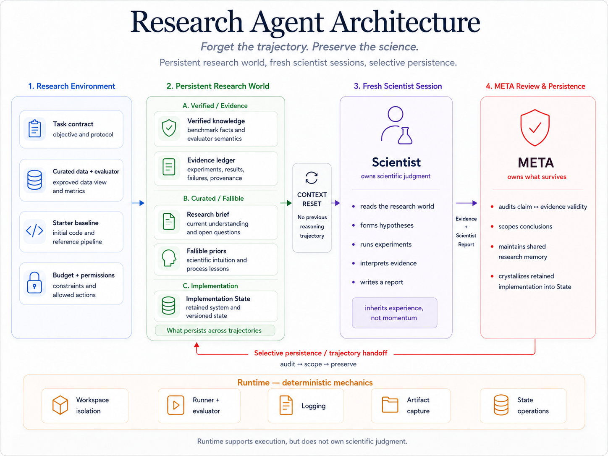

Momentum compounds.
Unfinished hypotheses, debugging detours, and past commitments remain in the room. The trajectory gets better at refining its current basin—and less likely to leave it.
TEAM GOOD4AI · AUTONOMOUS ML RESEARCH / TECHJAM 2026
A research layer over your
agent harness.
Long-horizon ML research needs more than a model that can write code. SciOdyssey keeps the research world alive while giving the next Scientist room to think again.
THE PRINCIPLE The new Scientist inherits the experience, not the momentum.
An autonomous agent can run one more experiment. The harder question is whether it can keep discovering when its own history starts to narrow the search.
Unfinished hypotheses, debugging detours, and past commitments remain in the room. The trajectory gets better at refining its current basin—and less likely to leave it.
Starting from zero breaks the momentum, but loses evaluator facts, negative results, scientific intuition, and the implementation already worth keeping.
The architecture separates scientific judgment, selective persistence, and deterministic execution. Each layer owns a different kind of truth.
Task contract, curated data, evaluator, baseline, budget.
Evidence, verified knowledge, working priors, implementation State.
Forms hypotheses, codes, runs experiments, interprets results.
Audits claims, scopes conclusions, updates memory, crystallizes State.
The Scientist decides what scientific question matters, how to implement the experiment, and whether to continue or pivot. Its context is local; its evidence returns to the world.

The benchmark is a concrete validation case: KuaiRand-Pure, public validation only, unchanged Starter Kit evaluator, CPU NumPy.
| Metric | Official FM | SciOdyssey | Absolute Δ |
|---|---|---|---|
| Primary | 0.6016000 | 0.6059363 | +0.0043363 |
| GAUC | 0.6674000 | 0.6728421 | +0.0054421 |
| nDCG@5 | 0.5357000 | 0.5390304 | +0.0033304 |
Each cycle inherits the evidence, not the previous Scientist’s hidden reasoning. The run stopped when the prescribed convergence boundary was reached.
The first Scientist read the task contract, tested leakage-safe historical encodings, and built a richer Factorization Machine. E003 reached a valid Full primary of 0.6016310, creating the first recoverable State.
Evidence is permanent; private reasoning is not.
Define the task, describe how you want it solved, and let the research world make the next handoff legible.
› Use the research-agent skill for task.md.
Follow PERSONAL.md. Run autonomously.
Let me review the results and evidence.The public repository includes the reusable Skill, runtime, tests, reports, telemetry, and reproducible submission snapshot.
THE OPEN QUESTION
Model switching, trajectory-level parallelism, and handoff quality remain open research questions. The benchmark validates the loop; the next work is to measure its causal value.